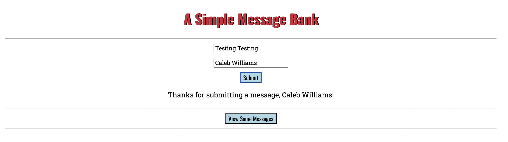
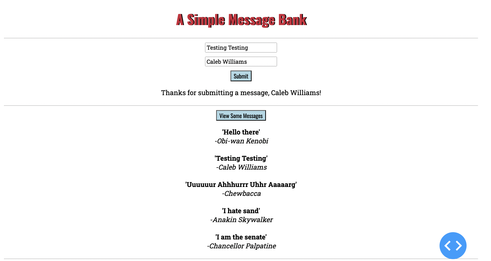

from dash import Dash, html, dash_table, dcc, callback, Output, Input, State
import sqlite3Hello, today we’ll be building a simple web app using Dash that functions as a message bank. Users will be able to submit messages and view a random sample of previously submitted messages. We’ll use Dash by Plotly for the web interface and SQLite to store the messages.
1. Importing Required Packages
We’ll start by importing the necessary packages. Dash will be used to build the web interface, while sqlite3 allows us to manage our database.
2. Setting Up the App Layout
Next, we’ll set up the app layout which defines the structure of our web interface. Here, we set up input fields for messages, buttons for submitting and viewing messages, and we add styling to make the app visually appealing. For extra fanciness, we’ll also load custom fonts from Google Fonts.
# initialize dash app
app = Dash()
# App layout
app.layout = html.Div([
# load in links to non-default fonts
html.Link(href="https://fonts.googleapis.com/css2?family=Oswald:wght@200..700&display=swap", rel="stylesheet"), # Oswald font
html.Link( href="https://fonts.googleapis.com/css2?family=Oswald:wght@200..700&family=Roboto+Slab:wght@100..900&display=swap", rel="stylesheet"), # Robot slab font
# header
html.H1("A Simple Message Bank",
style={'text-align': 'center', 'font-family':'Oswald', 'color': '#cf2539', 'text-shadow': '2px 0px 0px black'}),
html.Hr(),
html.Div([
dcc.Input(id='message-input', type='text', placeholder='Enter your message', # input textbox for message
style={'margin': '10px auto', 'display': 'block','font-family':'Roboto Slab'}),
dcc.Input(id='handle-input', type='text', placeholder='Your name', # input textbox for name
style={'margin': '10px auto', 'display': 'block','font-family':'Roboto Slab'}),
html.Button('Submit', id='submit-btn', # submit button
style={'margin': '10px auto', 'display': 'block', 'font-family':'Oswald', 'background-color': '#ADD8E6',}),
html.Div(id='submission-status'), # divider, where submission status is displayed
html.Hr(),
# view random messages button
html.Button('View Some Messages', id='view-btn', n_clicks=0,
style={'margin': '10px auto', 'display': 'block','font-family':'Oswald', 'background-color': '#ADD8E6',}),
html.Div(id='random-messages-display'), # divider, where random messages are displayed
html.Hr()
], style={'text-align': 'center'}) # overall centering of buttons/text
])- We use
html.Linkto load Google Fonts (Oswald and Roboto Slab) for custom styling (the font embed links are taken from https://fonts.google.com/). html.H1defines the title with center alignment, a red color, and shadow effect.dcc.Inputcreates input fields for the message and user’s handle/name with custom font styling and margins.html.Buttonelements allow users to submit a message or view messages. Both buttons have customized colors and fonts.html.Divare where submission status and random messages from the database are displayed
3. Setting Up the Database
We’ll store user-submitted messages and names in a SQLite database. I’ll define a get_message_db function that initializes an SQLite database and creates a table called messages if it doesn’t already exist.
def get_message_db():
global message_db
# connect to db
message_db = sqlite3.connect("messages_db.sqlite", check_same_thread=False)
cursor = message_db.cursor()
# create messages table with hangle and message cols
cursor.execute('CREATE TABLE IF NOT EXISTS messages (id INTEGER PRIMARY KEY, handle TEXT, message TEXT)')
return message_dbget_message_db: - declares message_db as global so it can be reused within the app. - connects to (or creates) the messages_db.sqlite file. - uses SQL to create a messages table if it doesn’t already exist, with columns for id (primary key), handle, and message.
4. Submitting Messages
Next, we’ll define the `handle_submission function which is triggered when a user clicks the “Submit” button. It inserts a message and handle into the database and provides feedback to the user.
@callback(
Output('submission-status', 'children'),
Input('submit-btn', 'n_clicks'),
[State('message-input', 'value'), State('handle-input', 'value')],
prevent_initial_call=True
)
def handle_submission(n_clicks, message, handle):
try:
if not message or not handle:
return html.Div([html.P("Error: Please fill in both fields!")],
style={'margin-bottom': '20px','font-family':'Roboto Slab'})
conn = get_message_db()
cursor = conn.cursor()
cursor.execute('INSERT INTO messages (handle, message) VALUES (?, ?)', (handle, message))
conn.commit()
conn.close()
return html.Div([html.P(f"Thanks for submitting a message, {handle}!")],
style={'margin-bottom': '20px','font-family':'Roboto Slab'})
except Exception as e:
return f"Error: {str(e)}"First we define a @callback function which links the submit-btn button to this function. - Output('submission-status', 'children') updates the submission-status area with feedback. - Input('submit-btn', 'n_clicks') Triggers the callback when submit-btn is clicked. - State reads values from message-input and handle-input fields without directly triggering the function. - prevent_initial_call=True prevents the function from running on page load.
The handle_submisison function then: - checks if both the message and handle are filled, and gives an error message if not. - inserts the submitted message and handle into the messages table. - returns a success message once sucessfully inserted into the database
5. Retrieving Random Messages
Now we’ll create a random_messages function selects a specified n number of random messages from the database. For now, I’ll set n to be 5.
def random_messages(n):
conn = sqlite3.connect('messages_db.sqlite') # connect to database
cursor = conn.cursor()
# Use parameter substitution to safely inject 'n' into the SQL query
cursor.execute('SELECT handle, message FROM messages ORDER BY RANDOM() LIMIT ?', (n,))
n_messages = cursor.fetchall()
conn.close()
return n_messagesrandom_messages: - Connects to the SQLite database. - Retrieves up to n (5) random rows from the messages table using SQL’s ORDER BY RANDOM() with a limit. - Closes the database connection.
6. Displaying Random Messages
Lastly, we’ll define a display_random_messages function that is triggered when the “View Some Messages” button is clicked. It uses the random_messages function to get random messages from the database and displays them.
@callback(
Output('random-messages-display', 'children'),
Input('view-btn', 'n_clicks'),
prevent_initial_call=True
)
def display_random_messages(n_clicks):
messages = random_messages(5) # cap of 5 random messages
if not messages: # check if there are messages
return html.Div([html.P("No messages available.")],
style={'margin-bottom': '20px','font-family':'Roboto Slab'})
return [
html.Div([
html.P(f"'{msg}'", style={'margin-bottom': '0px','font-weight': 'bold'}),
html.P(f"-{handle}", style={'margin-top': '0px','font-style': 'italic'})
], style={'margin-bottom': '20px','font-family':'Roboto Slab'})
for handle, msg in messages
]@callback connects view-btn to this function. - Output('random-messages-display', 'children') updates the random-messages-display area with message content. - Input('view-btn', 'n_clicks') triggers the function when view-btn is clicked. - prevent_initial_call=True prevents the callback from running on page load.
display_random_messages calls random_messages(5) to fetch up to 5 random messages. - If no messages are available, it displays a “No messages available” message. - If messages exist, each message is displayed with the message text in bold and the handle in italics.
7. Running the App
Finally, we use launch the app using:
if __name__ == '__main__':
app.run_server(port=8052, debug=True)It looks pretty good! Lets test the submit and view messages functionality:

Here I submitted a message “Testing testing” with my name, and got a successs message!
Now let see some messages stored in the database:

As we can see, the message I added along with others from the database are successfully retrieved and displayed!